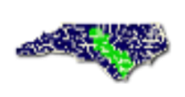
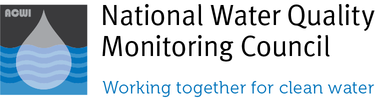

Environment

Cape Fear River Basin Monitoring Coalitions’ Water Quality Data – water quality measurements for several locations along the Lower Cape Fear River
- Spatial resolution: point
- Temporal resolution: monthly
- Web: http://lcfrp.uncw.edu/riverproject/

EPA National Air Emissions Monitoring Study – air quality and emissions data from select animal feeding operations in CA, IA, IN, KY, NC, NY, OK, TX, WA, and WI
- Spatial resolution: point
- Temporal resolution: varies by location
- Web: https://archive.epa.gov/airquality/afo2012/web/html/index.html
EPA Toxics Release Inventory – reported releases of toxic chemicals including location, chemical released, and amount released from across the US
- Spatial resolution: point
- Temporal resolution: annual
- Web: https://www.epa.gov/toxics-release-inventory-tri-program/tri-basic-data-files-calendar-years-1987-2016
Global Runoff Data Centre – riverine runoff data for sites across the globe
- Spatial resolution: point
- Temporal resolution: varies by location
- Web: http://www.bafg.de/GRDC/EN/Home/homepage_node.html
National Estuarine Research Reserve System Wide Monitoring Program – water quality data from estuarine sites across the US
- Spatial resolution: point
- Temporal resolution: varies by location, but many are 15 minute from 2002-2018
- Web: http://cdmo.baruch.sc.edu/

National Water Quality Monitoring Council
- Spatial resolution: point
- Temporal resolution: varies by location Web: https://www.waterqualitydata.us/
North Carolina Climate Office – weather data for sites across NC
- Spatial resolution: point
- Temporal resolution: hourly, daily, or monthly
- Web: https://climate.ncsu.edu/cronos
North Carolina Department of Environmental Quality’s Baseflow Estimates – modeled baseflow for streams and rivers across the state
- Spatial resolution: point
- Temporal resolution: daily or annual
- Web: https://www.ncwater.org/?page=685

NOAA North American Drought Monitor – drought indices (Palmer Drought Index and Standard Precipitation Index) for sites across the US
- Spatial resolution: point
- Temporal resolution: annual, 1950-2017
- Web: https://www.ncdc.noaa.gov/temp-and-precip/drought/nadm/indices/
Ocean Conservancy’s International Coastal Cleanup dataset – marine debris (aka trash) collected across freshwater and coastal sites, reported by in categories of debris type; sites include locations from all over the world, but are mostly concentrated in the US
- Spatial resolution: point
- Temporal resolution: varies by location
- Web: http://archive.coastalcleanupdata.org/datacollection/
- Additional notes: You will have to create an account to download the data, but the Ocean Conservancy will not share your info with others.

USGS Streamflow – flow data from streams and rivers across the US
- Spatial resolution: point
- Temporal resolution: varies by location
- Web: https://waterdata.usgs.gov/nwis/rt
USGS Water Quality & Streamflow Data (NC-specific links) – water quality data for streams and rivers across the state Spatial resolution: point
- Temporal resolution: varies by variable
- Web: Water quality (https://waterdata.usgs.gov/nc/nwis/current/?type=quality&group_key=basin_cd) and streamflow (https://waterdata.usgs.gov/nc/nwis/current/?type=flow&group_key=basin_cd)
- Additional notes: Click on a “Station Number” to view all data available for a particular site, and download “Tab separated” data for easy upload into R